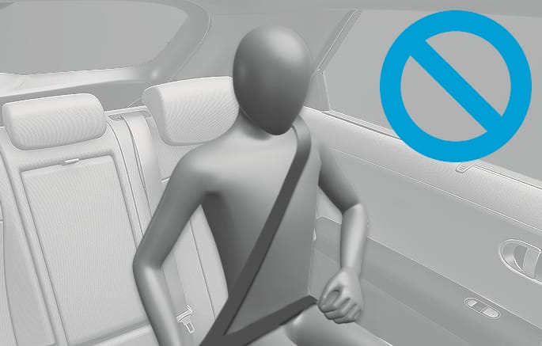
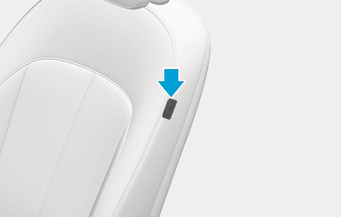
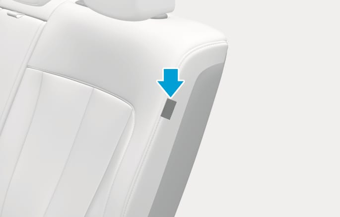
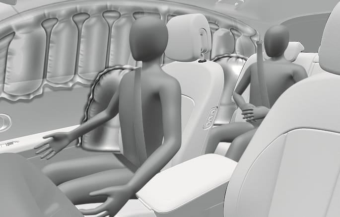
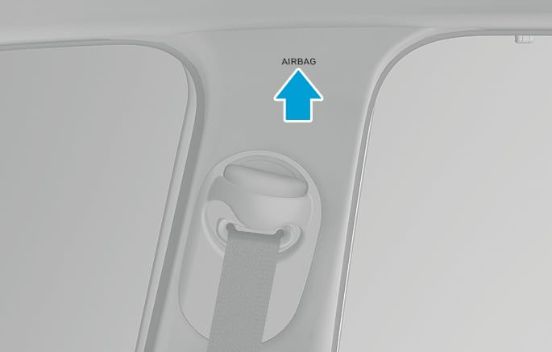
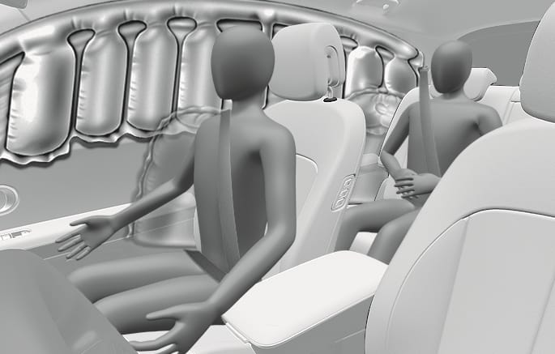

사이드 에어백과 커튼 에어백
-
커튼 에어백의 보호 효과를 최대화하려면 모든 탑승자가 안전벨트를 착용하고 바른 자세를 유지해야 하며, 어린이는 적절한 보조좌석에 착석해야 합니다.
-
측면 충돌 센서가 충격을 감지하거나 전복 센서가 차량의 전복 상황을 감지하는 경우, 실제 측면 충돌이나 전복이 발생하지 않은 경우에도 사이드 에어백 또는 커튼 에어백이 작동할 수 있으므로 주의하십시오.
-
탑승자의 안전을 위해, 사이드 에어백 및 커튼 에어백이 장착된 차량에 탑승할 때 다음과 같은 행동을 자제하십시오.
-
창밖으로 손이나 머리 등 신체를 내밀지 말고, 도어에 머리나 몸을 기대거나 팔을 걸치지 마십시오.

2C_CurtainAirbagWarning
-
도어와 탑승자 사이에 물건을 두거나 헤드라이닝, 사이드 필라 트림 등 에어백이 팽창하는 위치에 물체를 두거나 부착하지 마십시오.
-
-
에어백 관련 부품을 임의로 분해하거나 수리하지 마십시오. 수리나 교체가 필요한 경우 당사 직영 하이테크센터나 블루핸즈를 방문하십시오.

2C_SideAirbagLabel

2C_SideAirbagLabel_2

2C_SideAirbagDeployment
사이드 에어백은 앞좌석과 뒷좌석 등받이에 창 방향으로 장착되어 있으며, 측면 충돌이나 전복 사고 등으로 작동 조건이 충족되는 경우 작동해 탑승자를 보호합니다.
-
사이드 에어백이 장착된 차량에 시트 커버를 씌우지 마십시오. 시트 커버가 사이드 에어백의 작동을 방해할 수 있습니다.
-
앞좌석 측면에 무리한 힘을 가하지 마십시오. 또한, 좌석을 변형하거나 액세서리를 부착 또는 설치하지 마십시오. 에어백이 비정상적으로 작동해 탑승자가 부상을 입을 수 있습니다.
-
사이드 에어백 라벨 등 시트에 부착된 라벨의 벌어진 틈새에 물건을 끼우거나 삽입하지 마십시오. 또한, 도어, 유리창, 앞뒤 필라 등 사이드 에어백이 팽창하는 위치에 물건을 놓거나 부착하지 마십시오. 물건이 에어백 작동을 방해할 수 있으며, 에어백 작동 시 탑승자에게 부딪쳐 심각한 부상이나 인명피해가 발생할 수 있습니다.
-
시트나 시트 커버가 손상된 경우 당사 직영 하이테크센터나 블루핸즈를 방문해 수리하거나 교체하십시오.

2C_CurtainAirbagLabel

2C_CurtainAirbagDeployment
커튼 에어백은 앞뒤 도어 사이의 안전벨트 고정부 윗부분에 장착되어 있으며, 측면 충돌이나 전복 사고 등으로 작동 조건이 충족되는 경우 작동해 탑승자의 머리를 보호합니다.
-
커튼 에어백이 장착된 차량의 뒷좌석에 어린이 보조좌석을 설치할 때에는 가급적 보조좌석이 도어에 닿지 않도록 하십시오. 에어백 작동 시의 충격으로 인해 어린이가 심하게 다치거나 사망할 수 있습니다.
-
도어, 유리창, 앞뒤 필라 등 커튼 에어백이 팽창하는 위치에 물건을 놓거나 부착하지 마십시오. 물건이 에어백 작동을 방해할 수 있으며, 에어백 작동 시 탑승자에게 부딪쳐 심각한 부상이나 인명 피해가 발생할 수 있습니다.
-
코트 훅에 옷걸이와 같이 단단하고 날카롭거나 깨지기 쉬운 물건 등 옷 이외의 다른 물건을 걸지 마십시오. 에어백 작동 시 차량이 손상될 수 있으며, 탑승자가 심각한 부상을 입거나 사망할 수 있습니다.